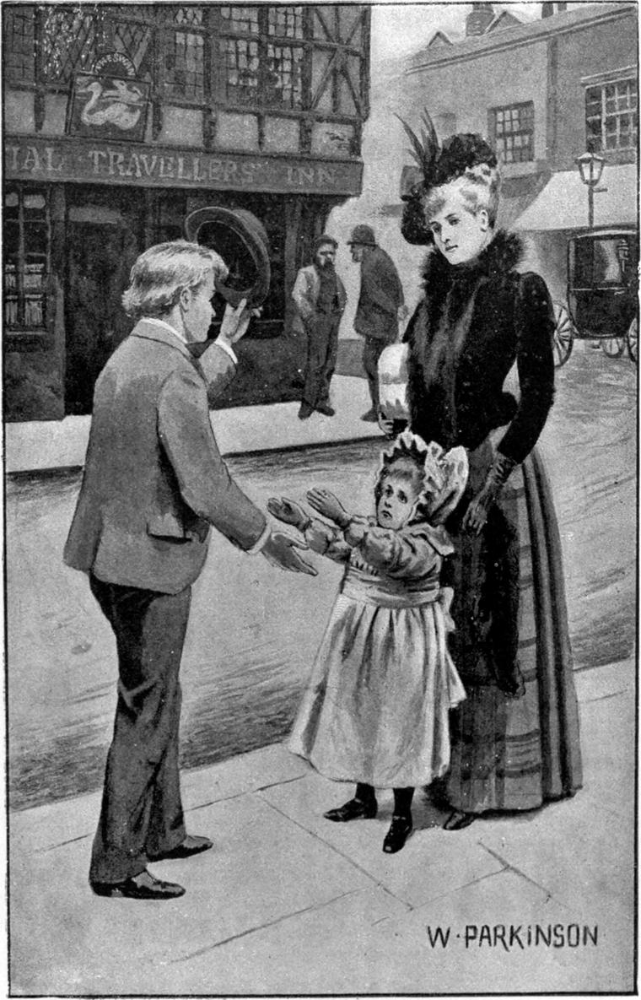

He had not long to wait. That very afternoon, going a message for the head-clerk, he met Ann walking with a young lady—who must be Miss Shotover. Neither sister seemed happy with the other. Ann was very white, and so tired that she could but drag her little feet after her. Miss Shotover, flushed with exertion, and annoyed with her part of nursemaid, held her tight and hauled her along by the hand. She looked good-natured, but not one of the ministering sort. Every now and then she would give the little arm a pull, and say, though not very crossly, “Do come along!” The child did not cry, but it was plain she suffered. It was plain also she was doing her best to get home, and avoid rousing her sister’s tug.
Keen-sighted, Clare had recognized Ann at some distance, and as he approached had a better opportunity than on the dark stair of seeing what his little friend was like. He saw that her eyes were unusually clear, and, paces away, could distinguish the blue veins on her forehead: she looked even more delicate than he had thought her. The lines of her mouth were straightened out with the painful effort she had to make to keep up with her sister. Her nose continued insignificant, waiting to learn what was expected of it.
For Miss Shotover, there was not a good feature in her face, and even to a casual glance it might have suggested a measure of meanness. But a bright complexion, and the youthful charm which vanishes with youth, are pleasant in their season. Her figure was lithe, and in general she had a look of fun; but at the moment heat and impatience clouded her countenance.
Clare stopped and lifted his hat. Then first the dazed child saw him, for she was short-sighted, and her observation was dulled by weariness. She said not a word, uttered no sound, only drew her hand from her sister’s, and held up her arms to her friend—in dumb prayer to be lifted above the thorns of life, and borne along without pain. He caught her up.

“I beg your pardon, ma’am,” he said, “but the little one and I have met before:—I live in the house, having the honour to be the youngest of your father’s clerks. If you will allow me, I will carry the child. She looks tired!”
Miss Shotover was glad enough to be relieved of her clog, and gave smiling consent.
“If you would be so kind as to carry her home,” she said, “I should be able to do a little shopping!”
“You will not mind my taking her a little farther first, ma’am? I am on a message for Mr. Woolrige. I will carry her all the way, and be very careful of her.”
Miss Shotover was not one to cherish anxiety. She already knew Clare both by report and by sight, and willingly yielded. Saying, with one of her pleasant smiles, that she would hold him accountable for her, she sailed away, like a sloop that had been dragging her anchor, but had now cut her cable. Clare thought what a sweet-looking girl she was—and in truth she was sweet-looking. Then, all his heart turned to the little one in his arms.
What a walk was that for both of them! Little Ann seemed never to have lived before: she was actually happy! She had been long waiting for Clare, and he was come—and such as she had expected him! It was bliss to glide thus along the busy street without the least exertion, looking down on the heads of the people, safe above danger and fear amid swift-moving things and the crowding confusions of life! To be in Clare’s arms was better than being in the little house on the elephant’s back in her best picture-book! True, little one! To be in the arms of love, be they ever so weak, is better than to ride the grandest horse in all the stables of God—and God would have you know it! Never mind your pale little face and your puny nose! While your heart is ready to die for love-sake, you are blessed among women! Only remember that to die of disappointment is not to die either of or for love!
And to Clare, after all those days upon days during which only a dog would come to his arms, what a glory of life it was to have a human child in them, the little heart of the pale face beating against his side! He was not going to forget Abdiel. Abdiel was not a fact to be forgotten. Abdiel was not a doll, Abdiel was not a thing that would not come alive. Abdiel was a true heart, a live soul, and Clare would love him for ever!—not an atom the less that now he had one out upon whom a larger love was able to flow! All true love makes abler to love. It is only false love, the love of those who take their own meanest selfishness, their own pleasure in being loved, for love, that shrinks and narrows the soul.
To the pale-faced, listening child, Clare talked much about the wonderful Abdiel, and about the kind good Miss Tempest who was keeping him to live again at length with his old master; and Ann loved the dog she had never seen, because the dog loved the Clare who was come at last.
When they returned, Clare rang the house-bell, and gave up his charge to the man who opened the door. Without word or tone, gesture or look of objection, or even of disinclination, the child submitted to be taken from Clare’s loving embrace, and carried to a nurse who was neither glad nor sorry to see her.
He had been so long gone that Mr. Woolrige found fault with him for it. Clare told him he had met Miss Shotover with her sister, and the child seemed so tired he had asked leave to carry her with him, Mr. Woolrige was not pleased, but he said nothing; on the spot the clerks nicknamed him Nursie; and Clare did his best to justify the appellation—he never lost a chance of acting up to it, and always answered when they summoned him by it.
Before the week was ended, he sought an interview with Miss Shotover, and asked her whether he might not take little Ann out for a walk whenever the evening was fine. For at five o’clock the doors of the bank were shut, and in half an hour after he was free. Miss Shotover said she saw no objection, and would tell the nurse to have her ready as often as the weather was fit; whereupon Clare left her with a gratitude far beyond any degree of that emotion by her conceivable. The nurse, on her part, was willing to gratify Clare, and not sorry to be rid of the child, who was not one, indeed, to interest any ordinary woman.
The summer came and was peculiarly fine, and almost every evening Clare might be seen taking his pleasure—neither like bank-clerk nor like nurse-maid, for always he had little Ann in his arms, or was leading her along with care and entire attention: he never let her walk except on entreaty, and not always then. To his fellow clerks this proof of an utter lack of dignity seemed consistent with his origin—of which they knew nothing; they knew only his late position. To themselves they were fine gentlemen with cigars in their mouths, and he was a lackey to the bone! To himself Clare was the lover of a child; and about them he did not think. Theirs was the life of a town; Clare’s was a life of the universe.
The pair came speedily to understand and communicate like twin brother and sister. Clare, as he carried her, always knew when Ann wanted a change of position; Ann always knew when Clare began to grow weary—knew before Clare himself—and would insist on walking. Neither could remember how it came, but it grew a custom that, when they walked hand in hand, Clare told her stories of his life and adventures; when he carried her, he told her fairy-tales, which he could spin like a spider: she preferred the former.
So neither bank nor nursery was any longer dreary.
At length came the gray, brooding winter, causing red fingers and aches and chilblains. But it was not unfriendly to little Ann. True, she was not permitted to go out in the evening any more, but Clare, with the help of the cook, devoted to her his dinner-hour instead. It was no hardship to eat from a basket in place of a table, to one who never troubled himself as to the kind, quality, or quantity of his food itself. He had learned, like a good soldier, to endure hardness. I have heard him say that never did he enjoy a dinner more than when, in those homeless days of his boyhood, he tore the flakes off a loaf fresh from the baker’s oven, and ate them as he walked along the street. The old highlanders of Scotland were trained to think it the part of a gentleman not to mind what he ate—sign of scant civilization, no doubt, in the eyes of some who now occupy but do not fill their place—as time will show, when the call is for men to fight, not to eat.